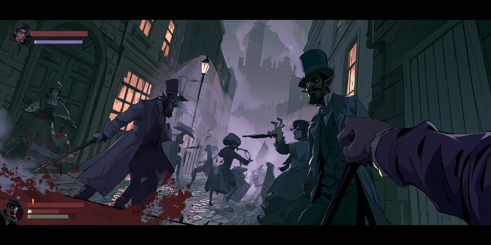
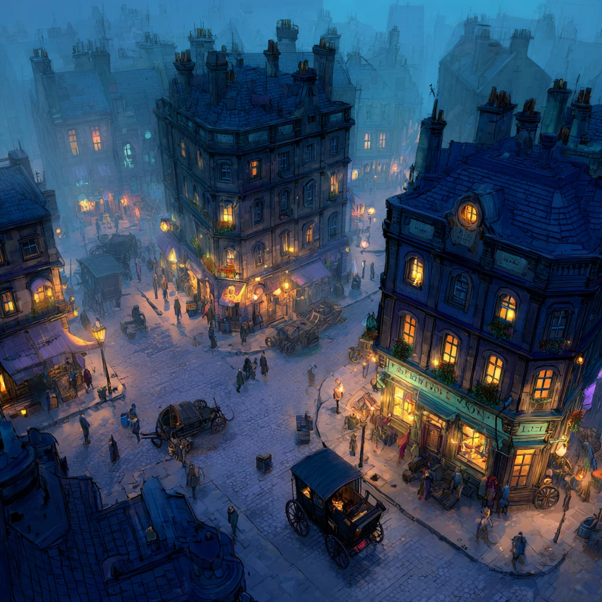
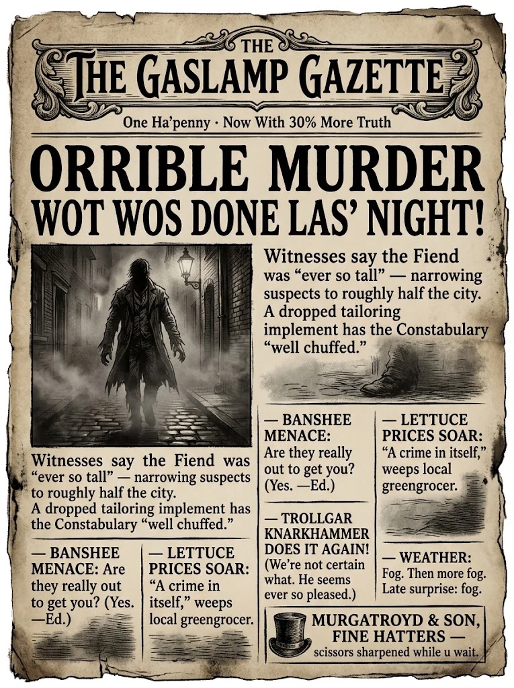

🔎
Role 1 · The deduction engine
The Constabulary
LLM detectives that reason over your evidence — weapon, MO, dropped items, testimony — and decide what they now "know," what to print, and which streets to seal. The manhunt's brain.

A foggy fantasy city of top-hatted dwarves and alley-lurking orcs, where by day you're a respectable shopkeeper and by night you're the thing in the fog. You desperately need to do wrong to get the energy to do right — and every murder feeds the LLM constabulary the clue that hangs you. A noose you tighten yourself.
The one-line hook
Jack the Ripper, but everyone's a dwarf in a top hat. You play a legitimate business owner who only feels alive when he kills — a dapper little monster who needs to do wrong to get the energy to do right. It's a comedy of manners with a body count, and the joke curdles the moment you notice you're the punchline.
The spine of the whole game
This is the loop everything hangs off. It looks like a power fantasy for exactly one cycle, and then it turns on you.
A murder in the fog — fuel, and a thrill you can't do without.
Energy restored; your shops and your body get sharper.
A weapon's mark, a dropped scissor, a witness who saw your coat.
The LLM cops print tomorrow's clue and seal streets near your shops.
Locked districts starve your business — so your night is weaker too.
…and a weaker night means you must kill more to keep up — which leaves more traces, which seals more streets. Every murder is both your fuel and your rope.
Two phases — and the camera is the horror
The perspective does the emotional work. Day is a calm overhead board where you feel in control. Night drops you into the fog, first-person, where you might be the hunter — or the hunted.

Run a small empire of 2-to-8 businesses from a safe god's-eye view. Light, legible management. You are calm, in control… and complicit.
Down in the street, up close and personal. You get roughly two game-hours to hunt. You can be hurt here. Later, only mob-bosses and cops are a worthy kill — so each becomes a boss fight.
And here's the quiet gut-punch: as the cops close in and seal districts, your safe daytime board literally shrinks. You watch your world of control contract, night by night, until there's almost nowhere left to stand.
Why you can't just stop
The compulsion isn't scripted — it falls out of two numbers arguing with each other every single night.
Lose a point each night you don't kill; gain a few when you do. Skip too long and you wither into a shopkeeper who can't lift the cleaver.
Rises with every kill; drifts down if you lie low. High Heat means closer cops, sealed streets, and coppers who look twice.
The day feeds the night
Your night body is built by your day job. A thriving shop buffs the stat its trade would sharpen — the butcher's arms, the cobbler's boots, the hatter's silent scissors. Six shops feed a stat; two are pressure valves.
| Business (day) | Feeds (night) | Struggling | Steady | Thriving | Why it fits |
|---|---|---|---|---|---|
| Butcher | Damage | +0% | +5% | +10% | All day cleaving meat — strong arms, sharp blades. |
| Apothecary | Max HP | +0% | +5% | +10% | Tonics and restoratives… and other tinctures. |
| Cobbler | Move speed | +0% | +5% | +10% | The best boots in the city — fast on wet cobbles. |
| Clockmaker | Attack speed | +0% | +5% | +10% | Fine, fast, precise hands. Perfect timing. |
| Hatter / Tailor | Stealth & dodge | +0% | +5% | +10% | Blend into the crowd — but your scissors are evidence. |
| Gin Palace | Stamina | +0% | +5% | +10% | Liquid courage — a longer, steadier night. |
| Undertaker | −Heat | −0 | −1 | −2 / night | A licensed body-disposer. Cools the manhunt. |
| Print House | +Intel | — | see a clue early | + tomorrow's patrols | You print the news — so you know what they know. |
Tiers are placeholders — start stingy and scale in testing. The point is the shape: run your shops well, and you're a better killer; run them badly, and the fog gets dangerous.
How you kill is a clue too
By day, a glint in an alley lets you grab or stash a tool for the night. Each weapon feels different — and each leaves an MO the morning paper will happily print.
| Weapon | Where you get it | Feel | MO signature (clue risk) |
|---|---|---|---|
| Cleaver | Butcher | Big, loud, messy | Loud — screams "the butcher again" |
| Scissors / hatpin | Hatter | Silent, elegant, low damage | Ties the clues straight to your shop |
| Corkscrew | Gin Palace | Quick, quirky | Distinctive — "just like las' time!" |
| Awl / boot-knife | Cobbler | Fast, close | Moderate |
| Lead pipe | A street glint | Blunt, cheap | Quietest signature — the "lay-low" weapon |
Reuse your favourite and the paper fingerprints your MO — Heat and clues spike. Switch it up for a muddier trail, but you lose the weapon you're good with. Even how you kill pulls on the noose.
The signature feature — and the LLM heart
Every dawn, the LLM constabulary turn last night's evidence — your weapon's mark, your dropped scissors, a witness's glimpse — into the next clue, and print it in the city's gleefully awful tabloid. Watch them close in over five nights:

Every clue is sourced from something you actually did — your MO, your shop, your coat — so the net feels earned, never random. And each headline seals another district, shrinking your safe daytime board. The newspaper is the horror, the tutorial, and the score all at once.
Where the AI actually lives
LLM detectives that reason over your evidence — weapon, MO, dropped items, testimony — and decide what they now "know," what to print, and which streets to seal. The manhunt's brain.
Turns the cops' deductions into a gleeful penny-dreadful front page each morning — the clue, buried in banshee scares and lettuce prices. Your feedback comes as satire.
LLM townsfolk who saw something — accurately, or not. Their testimony (a coat colour, a height, a limp) is what the detectives reason from. Silence them, or let them talk.
Escalating encounters in the fog. Night one it's "Top o' the evenin', guv!"; a few kills later it's "Oi — tall fellar in a red coat? Come 'ere!" They get harder to shake as they learn.
There is no winning — and that's the point
You will be caught. The only question is: how far did you get?
No unlocks, no power-ups for next time, no clean getaway — that would betray the fantasy. Each run is a doomed little life that ends on the gallows. Keep it simple; keep it inevitable.
Your only trophy is the last headline you earn: "THE FOGWICK FIEND TAKEN AT LAST — 14 souls afore the noose. 'E kept a lovely hat shop, apparently."
For the staff room